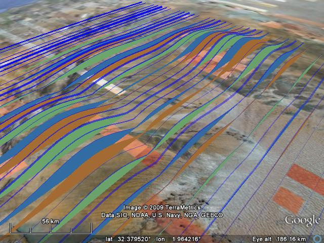

A simple case
The best documented function in the toolbox is KML line For the most it works just like matlab line, except that a lot of extra options are available via keyword value pairs.
Just a simple case, some lat an lon data. To see approximately what we will get, use the matlab function line.
lat = [70 40 40 70]; lon = [4,5,16,16]; line(lat,lon); axis([30 80 3 17])

KMLline works just like line, except that one has to save the output file, and open that in Google Earth to view the result. Alternatively, you can assign the location to save the file as a keyword/value pair.
fname = fullfile(tempdir,'line.kml'); KMLline(lat,lon,'fileName',fname);
3D lines
matlab can also draw 3 dimensional lines
lon = 0:.1:360; lat = linspace(0,90,size(lon,2)); z = (1+sind(lon*50))*1e5; clf; line(lat,lon,z) view([-3 88])
and so can KMLline
KMLline(lat,lon,z,'fileName',fname);
Multiple lines
Matlab can draw multiple lines at once
[lat,lon] = meshgrid(90:-10:-90,0:.5:360); z = (1+sind(lon*50))*1e5; clf; line(lat,lon,z) view([66 89])
and so can KMLline
KMLline(lat,lon,z,'fileName',fname);

Grids
We can also add the transposed lines
line(lat',lon',z')
axis([-10 30 10 30 0 1e5])
axis off

And so can KMLline. Save with a different name as the previous KML file and open both in Google Earth. Also, we set the 'fill' property to false
KMLline(lat',lon',z','fileName',fname,'fill',false);

Advanced options
Finally, here is an example of how to make some more complex output, using additional keyoword value pairs
To get an idea of different options, just call the function without arguments.
KMLline
ans =
fileName: []
kmlName: []
lineWidth: 1
lineColor: [0 0 0]
lineAlpha: 1
fill: 1
fillColor: [0 0.5000 0]
fillAlpha: 0.4000
openInGE: 0
timeIn: []
timeOut: []
is3D: 0
...We will generate some data, and specify a variety of input arguments. Note the repetition of inputs that are smaller than the number of lines. This allows one to make patterns in the output.
[lat,lon] = meshgrid(30:.1:35,0:.1:5); z = 1000*abs(peaks(51)); OPT = KMLline(lat,lon,z,'fileName',... fname,'fillColor',jet(5),'fillAlpha',[1 0 1 0 1],... 'lineColor',[0 0 1],'lineWidth',[0 1 2 4 2 1],'lineAlpha',linspace(0,1,51));

To understand how this works, evaluate the OPT
var2evalstr(OPT)
ans = OPT.fileName = 'e:\Temp\line.kml'; OPT.kmlName = 'line'; OPT.lineWidth = [0 1 2 4 2 1 0 1 2 4 2 1 0 1 2 4 2 1 0 1 2 4 2 1 0 1 2 4 2 1 0 1 2 4 2 1 0 1 2 4 2 1 0 1 2 4 2 1 0 1 2]'; OPT.lineColor = [0 0 1 0 0 1 0 0 1 0 0 1 0 0 1 0 0 1 0 0 1 0 0 1 0 0 1 ...
Notice how there are only five distinct fill styles, but 51 unique line styles.
Finally, delete the temporary files created
delete(fname);